意大利街头被拥抱的华人小伙：我不是病毒，我是人类｜深度报道
原文链接 备份链接 记者/颜星悦 编辑/计巍 宋建华 姜啸戴着口罩和眼罩，站在弗洛伦萨的街头 2月2日，意大利佛罗伦萨街头，姜啸戴着口罩，用黑色的布条蒙着双眼，站在广场中央。他的身边立着一块牌子，上面写着：“我不是病毒，我是人类，不要对我 …
以下文章来源于地球青年图鉴 ，作者地青

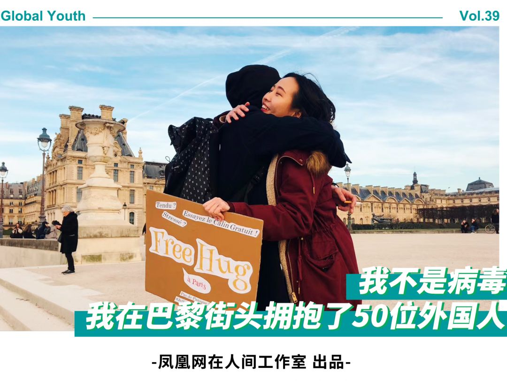
受疫情的影响，多个国家发布了限制中国旅客入境的政策。在海外，人们开始警惕冠状病毒的感染，随之而来的，还有对亚裔的恐慌，华人屡次遭歧视、暴力的事件被报道，有人甚至把病毒等同于中国人。
身处法国的中国女孩李灵在生活中也遇到过歧视，她决定走上街头，邀请陌生人拥抱，以此反对因冠状病毒带来的种族歧视。
以下是李灵的自述。
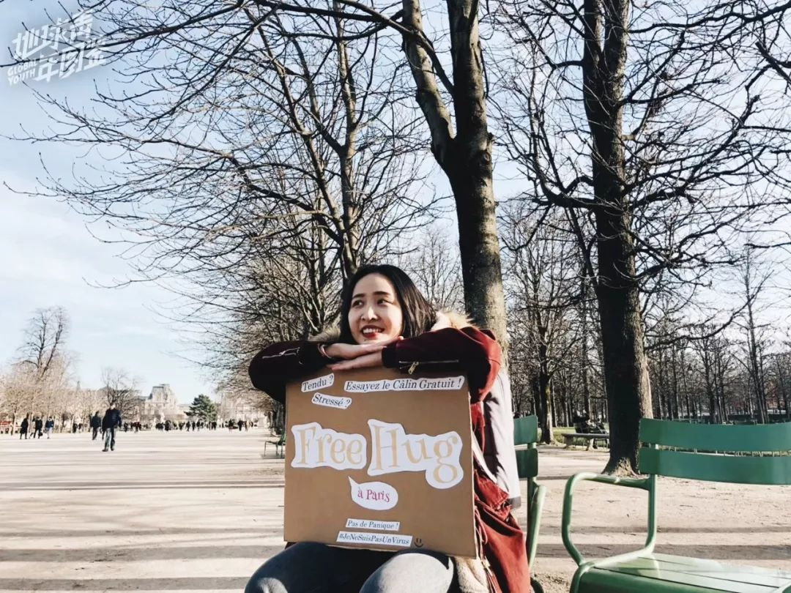
△ 我拿着牌子在杜乐丽花园
我是李灵，来自广东，2017年底，我来到法国一家高校读项目管理专业研究生，刚刚结束学业和实习，现在在巴黎进修法语语言能力。
国内刚开始出现疫情时，身在巴黎的我还开玩笑地跟家人说：“你们看吧，还好我没回去。”之后的短短几天，这场疫情进化成一次国际公共卫生危机，人人自危。在国内一些人躲着武汉人，在国外也有人避开戴口罩的中国人，欧洲人有时分不清中日韩的脸，于是又升级成了躲开亚裔。
△ 在修建中的巴黎圣母院
1月22号左右，我听说国外开始出现多起确诊病例，我白天还在办公室里跟同事讨论如何写邮件安抚大家，因为公司经常有中欧的商务差旅。几个小时后，我下班坐巴黎城际快车RER线回家，没想到遭遇了我第一次的“病毒歧视”。
下班高峰的RER相对拥挤了一些，我找到一个靠窗的位置坐下来，对面坐着一位男士，分不清是法国还是其他国家的。起初我没注意，但是坐下后一抬头，发现那位男士用围巾包住了自己的鼻子和嘴巴。
我心里就想着，这是怕我传染吗？不是吧，一定是我想多了。二十分钟的路程结束，我起身下车，却在转身离开的那一瞬间，眼角瞥到了那位男士一把拉下自己的围巾，深深吸了一口气。那一刻，我内心有些生气，但又无奈，别人会怕也是正常的，到家后我还跟法国室友调侃，让他也躲着我。
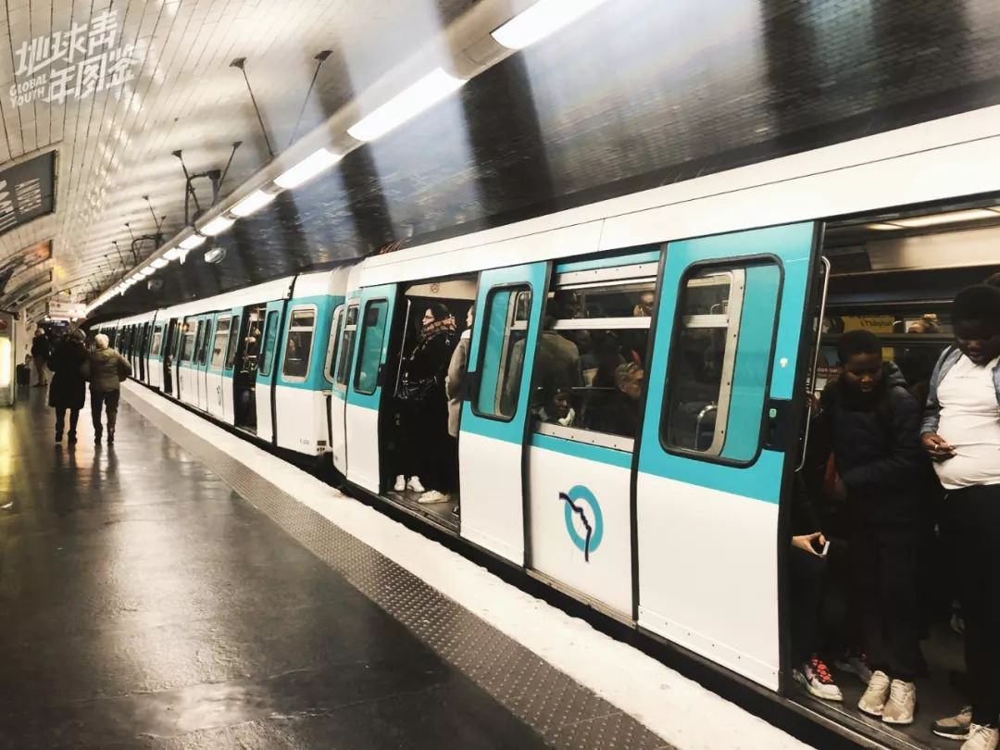
△ 巴黎的地铁
没想到的是，接连两天，我在地铁和公交车上又有了类似的遭遇。
第二天我坐地铁出门，地铁里很嘈杂，我却清晰地听到有人压低声调讲着Chinoise（中国人）的声音，瞄了一眼，发现是一群法国青少年在交头接耳。我不想跟他们计较，然而在我下车经过那群小孩时，一个年纪稍微大一些的男生猛地转身背对我，然后推着他的朋友远离我，嘴里还喊着：C‘est une chinoise！（是个中国人）已被人群推着下车的我，满腹不知是愤怒还是难过，一直憋着回家才跟朋友诉说。
法国朋友听了也很生气，对我说，你怎么不当场骂回去呢？在我们法国，对于这种人就要怼回去，给他们点教训。我听着笑了，说下次我一定怼回去，我还要去网上发起“#Coronaracism”（关于冠状病毒的种族歧视）标签话题的讨论。
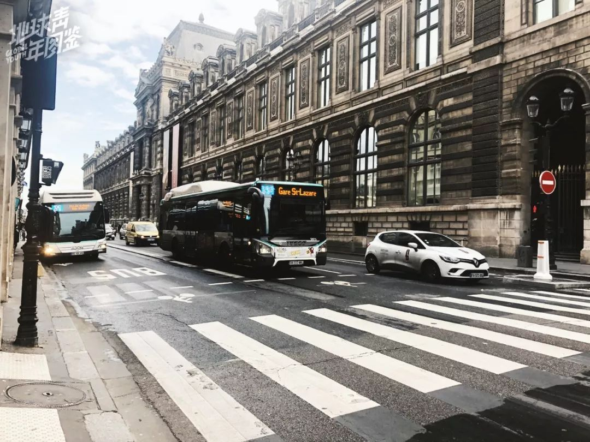
△ 巴黎的公交车
然而当晚法国就出现了两例确诊病例，我开始有些焦虑，以至于次日需要出门坐公车的时候，还叫法国室友陪我出门。他问我为什么，我说怕又被人歧视了，他嫌弃地说，要是你有病毒，那我早就被你传染了，就算你病了，你在法国还能享受vip级别的治疗，这个病毒又不是绝对致命，至于那些没脑子的人，不要理他们。
我被安慰之后，心里好受了一些，但半小时后的公交车上，我又遭遇了乘客自动“让座”自行“清场”……

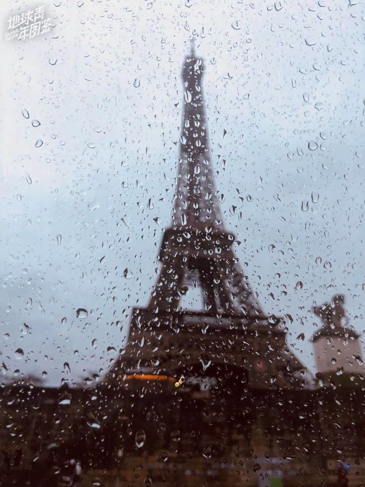 △ 冬季雨中的巴黎铁塔
当冠状病毒引发的种族歧视已经变成跟朋友、同事间日常聊天调侃的话题，遭遇病毒歧视产生的不安情绪也过去了。接下来的几周，我也不在意自己是否被人避开，想着反正麻烦的是他们，也不是我。
真正让我难受的是，朋友圈和微博铺天盖地关于疫情的消息，让人愤怒的，难过的，无可奈何的，大家从来没有像现在一样，想方设法要支持前线的医护人员。
手机小小的屏幕传递出的气愤和悲恸，让我有了强烈的焦虑和不安，一度很怕打开微博和朋友圈。在海外的华人也开始遭遇更多不公平的歧视，留学生被欺负的新闻也逐渐多了起来，更让我感同身受和难过。
 △ 我制作的纸牌
△ 我制作的纸牌
我开始思考自己能做什么。其实我在法国的生活压力很大，没办法像一些人去扫街买口罩寄回国内，但又不想只是点点手指转发文章。
一月底，我结束了工作，一次自我情绪小崩溃后的夜读里，看到尼采的书《Human, All Too Human》的一段话：每天的第一个想法——要好好地开始每一天，最佳方法就是醒来后就想一想，今天是否至少给一个人带来快乐。如果这个想法可以用来代替祈祷的宗教习惯，那么大家都能从这一改变中获益匪浅。
第二天醒来，脑子里突然蹦出一个想法：不如我在巴黎做一次Free Hug（免费拥抱）吧。
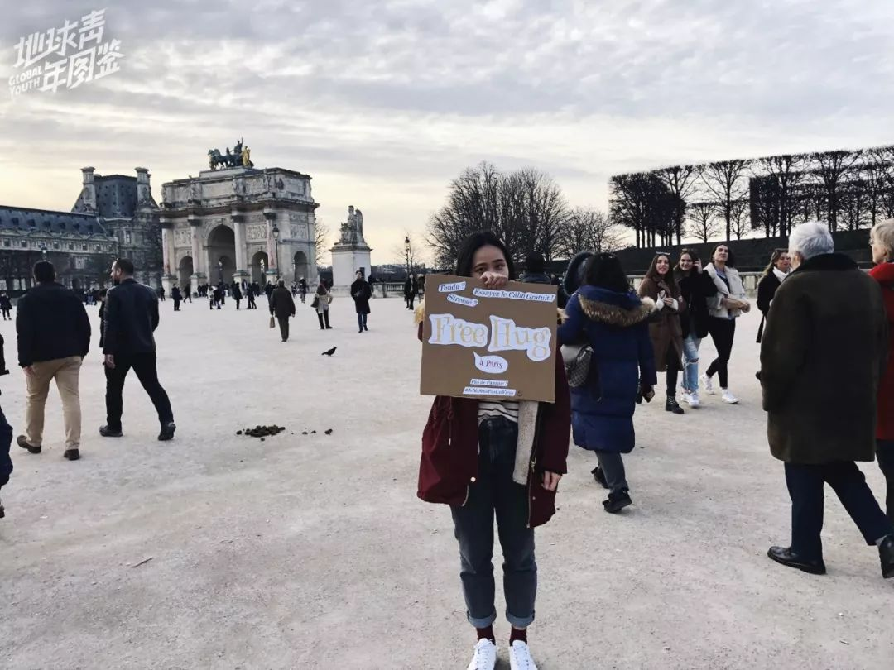△ 我在凯旋门前的街上送拥抱
“Are you crazy !”（你疯了吗） 这是我的法国友人听到我要去巴黎街头Free Hug 的第一反应。一直到我把纸板做好了，给他们看到照片里的实物时，他们才相信我真的要去做了。
为了这个行动，我准备了4天。纸牌上写的内容一开始是自己想，后来法国朋友也帮我出了主意。从有点搞笑的开头到最后那句“不要惊慌，我不是病毒”，其实还有点法式幽默的感觉。我不想把它弄得太严肃，就是想在非常紧绷、焦虑的环境里，做一个轻松有趣但又让人有思考的事情。
其实这不是我第一次做Free Hug的活动了。2015年，我发起过一次名为“100 Free Hugs”的众筹项目，当时我在韩国旅行11天，挑战自己在异国街头收集一百个来自陌生人的拥抱。所以街头Free Hug算是轻车熟路，但不同的是，现在处在比较紧张的大环境下。在巴黎生活了两年多，我大概了解拥抱是法国人与亲人朋友之间比较亲密的行为，而且巴黎人相对“冷漠”，所以拥抱陌生人挑战还是有的。
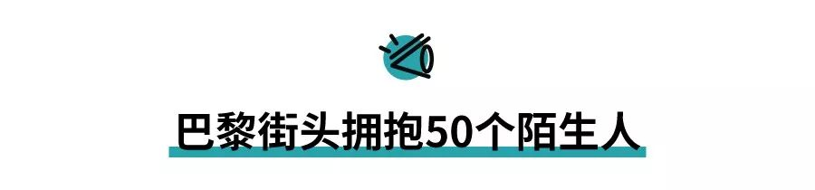
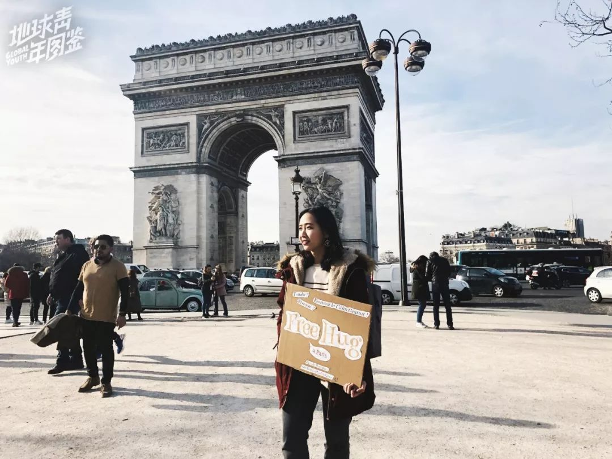
△ 我在凯旋门前的街上送拥抱
冬天的巴黎天气大多阴冷多雨，但就在决定要做Free Hug的这个礼拜，巴黎给了我一个晴天。２月７日，我上午正好在拉德芳斯新凯旋门附近上法语课，便决定下午两点从拉德芳斯开始送拥抱，一路往东，去往凯旋门，香榭丽舍大道，杜丽乐花园和卢浮宫。
中午时分，新凯旋门大阶梯上坐着许多午休时间晒太阳、吃饭的白领和学生。等到了帮忙记录的摄影师朋友后，我开始举着牌子从大阶梯下来，笑眼看着大阶梯上的人，嘴上一直跟朋友念叨，缓解自己内心的紧张。
虽然这已经不是我第一次Free Hug了，但心里还是很紧张，要是被拒绝了会很尴尬。我不怕有人骂我，反而担心无人理睬，冷漠才是最让人难过的。

△ 新凯旋门大阶梯旁，我送出了第一个拥抱。
我举着牌子站了好一会，才收到第一个拥抱，原来是我坐在阶梯上等朋友时，在我旁边的一位法国男生。他看我一直无人理睬，就笑着对我招招手，我一时没反应过来，于是他起了身，走到我面前，抱了一下。

△ 黄色卫衣的男生用手和我拼成完整的心。
渐渐地，大阶梯远处跑下来好几个法国女生都给我拥抱。还有一群看起来像是高中生的青年，一开始坐在远处对我打量了许久，过了一会，他们一起排队来给我拥抱。其中有一位穿着黄色卫衣的男生不想抱，他就用手比了半个心的模样，让我的手跟他拼成一个完整的心，以此来表达支持，真的很可爱。感觉世界上还是好人多，心里也变得轻松了些许。

△ 拥抱小朋友
我接着转场来到凯旋门和香榭丽舍大道，这里四处都是游客，游客们还是挺有距离感的，大家在景点前各自拍照，看了一眼我和牌子，没有理会我。
在这里我收到的拥抱并不多，不过有一个好笑的片段。在香榭丽舍大道上，一群法国中学生路过，看到我的牌子就喊“拥抱诶”，接着推了一个小男生到我面前，小男生愣住了，问我这是什么，我说是拥抱啊，不怕，我不是病毒，小男生没反应过来，但是身体确实对我倾过来，于是我只好抱了他一下，后面响起一阵哄笑。
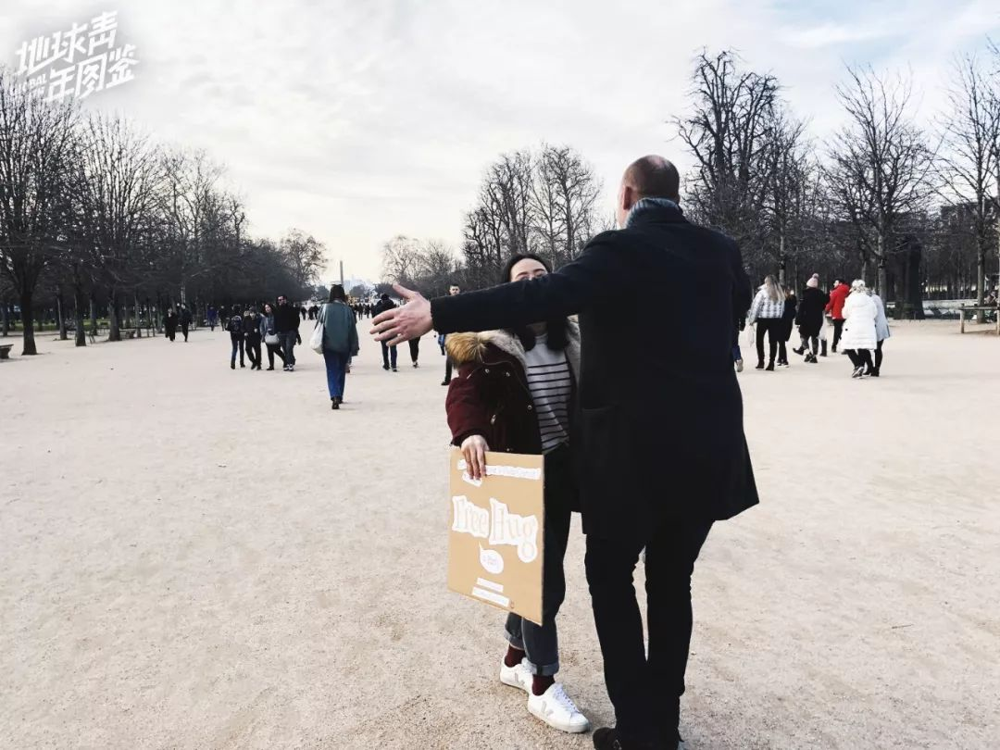
△ 在杜丽乐花园，我与一位大叔拥抱。
在凯旋门和香榭丽舍大道有点受挫，我拉着朋友往杜丽乐花园走，那里是法国人闲暇时间出门散步的地方。刚到杜丽乐，就遇上一个西班牙口音英文的法国大爷，他看到我的牌子主动上来拥抱，还跟我们聊天。
这位大爷去过中国好多次了，看到我牌子上写的Je ne suis pas un virus (我不是病毒)，就开始感慨，“中国这次挺难的，我希望你们快点好起来，那些说你们是病毒的人，不要理他们，他们没脑子”。听到这样的话我很开心，因为他是下午Free Hug以来，第一个停下来认真地跟我们聊天的人，终于可以与别人多聊聊这个话题。
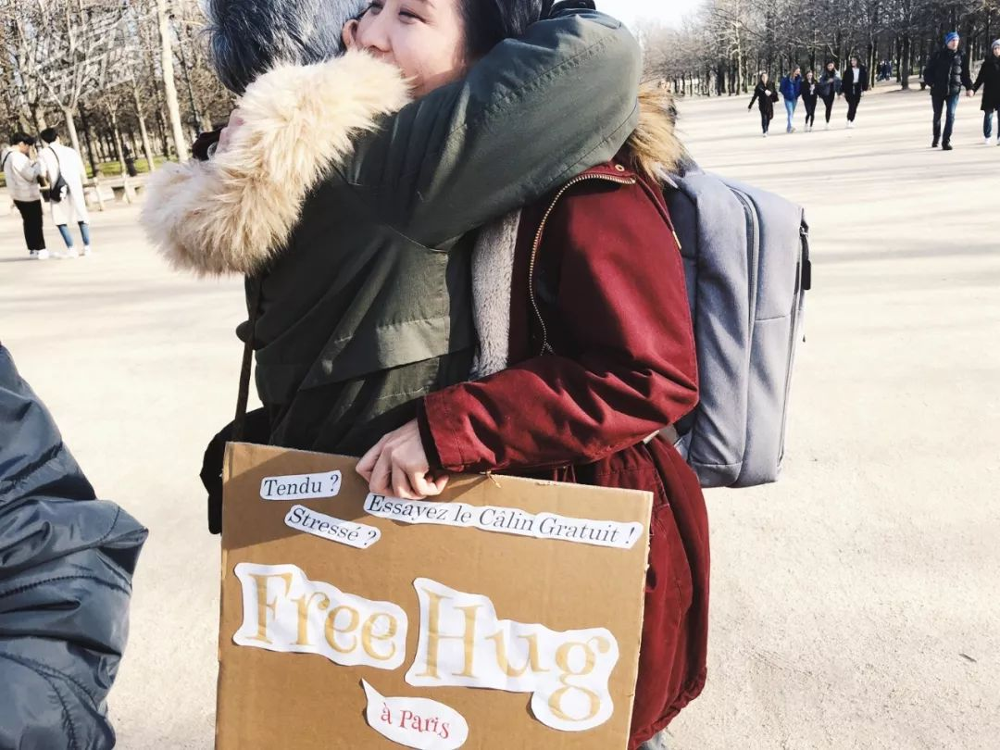
△ 在杜丽乐花园，我与灰发阿姨拥抱。
告别大爷后，我又遇到一群三两老友出门溜达的法国人，其中一位大叔指着我的牌子对另外一个大叔打趣说，你看你看有免费拥抱诶，大叔摇摇头说不不不。我指着牌子说，不要害怕啦，我不是病毒。
一脸笑容的灰发阿姨拍了一下大叔说，哎哟你们走开，然后给我了一个拥抱，还对我说你这个行为太可爱了，不要理他们，开始拉着我热情地聊家常，大叔们被她感染，最后走的时候也给我了大大的拥抱对我说加油。

△ 在杜乐丽花园拥抱了一位女孩。
在杜乐丽花园，我送出了最多的拥抱。印象最深刻的是一位爸爸看到我之后，半推着他的小女儿到我面前，小女孩微笑着但很羞怯，在爸爸的好几次眼神鼓励下，才走到我的面前伸手抱了我一下。我看着那位爸爸手边还拉着儿子，从外表看起来可能是自闭症患者，应该是一个挺不容易的家庭吧。突然觉得这个拥抱，女孩可能需要鼓起好大的勇气，还有她爸爸舍得把她推到一个陌生人面前，才能实现的。我忍不住在她耳边对她说，你今天很好看，要继续加油哦！
 △ 在香榭丽舍大道拥抱了一位女生。
△ 在香榭丽舍大道拥抱了一位女生。
最后在卢浮宫准备结束时，遇到一位打扮优雅的英国绅士。他和他的朋友在马路对面就看到了我的牌子，一直笑着聊天。等到他过了马路跟我对上了眼神，我便张开手示意，他挥挥手说不不不，没想到走了几步又回过头。我追问为什么呀，他笑着说我怕，我说怕什么呀，我又不是病毒，他一边说我不知道呀，一边给了我一个拥抱。
出发前我跟朋友讨论过，今天能有10个人愿意拥抱就挺不错了，没想到最后大约有50多人跟我拥抱，巴黎也没有法国友人说得那么冷漠嘛。

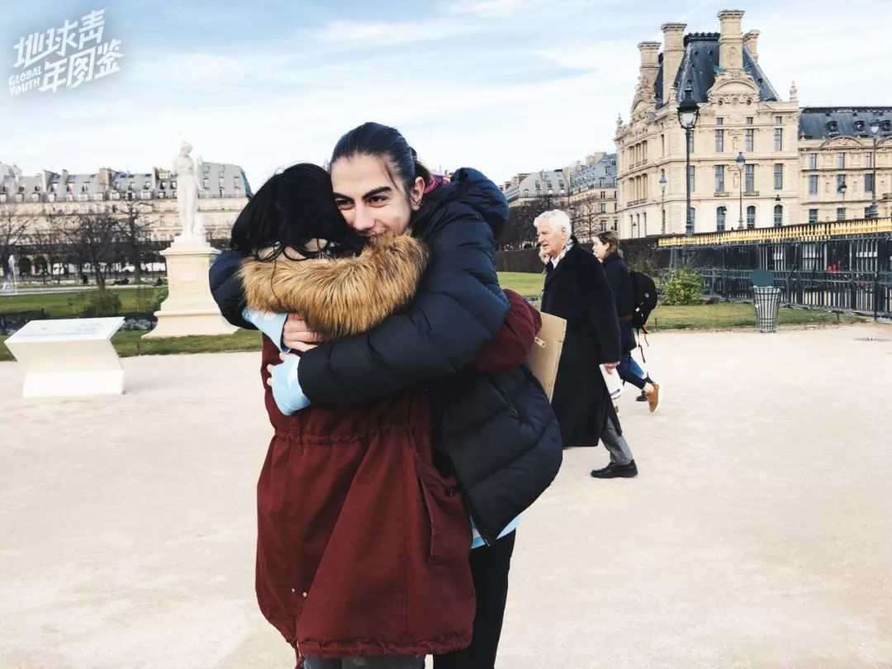
△ 在杜乐丽花园拥抱了一位男生。
因为病毒，大家自我禁足隔离戴口罩，用保持距离的方式互相保护, 但却因为文化的差异，被国外不了解的人视为猛虎。目前在法国街头戴口罩的人很少，我只遇到过少数亚洲面孔佩戴口罩，法国大众的医疗知识基础和健康意识比较强的，如果生病就会呆在家里休息不出门，街头戴口罩的人，对他们而言，意味着你已经生病了，但是还要出门，这就是潜在地危害他人的安全，制造恐慌。
尚在国外的我，以一个健康的我，在安全的环境里，希望通过这个小小的行动，博大家一笑，让大家在这个混乱而不安的世界里看到一些温暖的人性，安抚一下焦躁忧虑的心情。
拥抱看起来很简单，但是它能让接受拥抱的人在那一刻短暂地卸下面具，感受温暖，每一个陌生拥抱背后是人心的信赖，没有太多理由，只是纯粹的善良和信任。

△ 在香榭丽舍大道拥抱了一位男生。
在巴黎街头送拥抱的过程中，我看到很多人在看了我的牌子之后，眼神里透露出的内心活动，从好奇，感兴趣，犹豫不决到放弃。能在从相遇到擦肩而过这短短的一瞬，最后下定决心走到我面前的人，我相信他们的内心有着强大而温柔的力量，才能驱动他放下防备，走到一个陌生人面前去拥抱。
就像其中一个男孩远远看到我的牌子，就毫不犹豫地张开双手一脸笑容地向我走来，用着温柔的声线对我说 : “Why do you do this ? ”（你为什么要做这个？）我回应说, “to make you happy and smile, I guess? Why do you hug me?” （想让你开心，让你笑啊。你为什么会拥抱我？）他拥着我说，“I don’t know! But it looks nice! ”（我不知道呀，但是看起来很棒！）

结束之后，我把过程中拍下的视频传到脸书的群组里，一开始收到一些质疑、谴责的声音，我当时其实有点怂，怕自己接受不了被骂得太惨，就把消息推送给关了。直到晚上我鼓起勇气打开群组，看到帖子下面三十多条评论，有人质疑我，也有人帮我反驳，还有一位经历过H1N1流感时期备受歧视的墨西哥人为我抗争。那一刻就觉得，被骂也没有关系，至少大家已经在讨论，总会有一些人开始理解。
我觉得每个国家都有温暖的人，也有狭隘的人。歧视总是有的，它也属于这个世界的一种声音，但是我们可以选择发出另外一种声音来对抗它，别人听到了自然会有判断，也会做出行动去改变。
作者 | 李灵
*编辑 | 图拉*
实习生 | 匡若彤 邹文昌 易琬玉
凤凰新闻客户端 凤凰网在人间工作室出品


新型肺炎疫情牵动人心，
《在人间》现面向全国网友征稿：
（一） 疫区影像日记
如果你身处疫区
请你用照片（视频）和文字记录
你所听闻和见到的一切
照片不少于3张
文字不少于300字
投稿方式：微信联系人间君（zairenjianliving）
（二）抗击疫情真实故事
无论你是一线医护人员、志愿者、
确诊或疑似患者及家属、已治愈出院人士等等，
如果希望讲述疫情相关经历，
请微信联系人间君（zairenjianliving）

原文链接 备份链接 记者/颜星悦 编辑/计巍 宋建华 姜啸戴着口罩和眼罩，站在弗洛伦萨的街头 2月2日，意大利佛罗伦萨街头，姜啸戴着口罩，用黑色的布条蒙着双眼，站在广场中央。他的身边立着一块牌子，上面写着：“我不是病毒，我是人类，不要对我 …
原文链接 备份链接 战 “疫” 已至中场，如今要拼的是战略和战术。麻烦的是，敌情并不明朗，人类还在折损。唯一能判断的是，鉴于新冠病毒的传染能力强，我们无法闪电战取胜。 胜利终究是人类的。我们已经掌握了病毒的诸多规律，其中最主要的一条是，随 …
原文链接 备份链接 澎湃新闻综合报道 针对近日散播的“武汉病毒所陈全姣举报所长泄露病毒”的消息，2月17日，中国科学院武汉病毒研究所在官方网站发布该所科研人员陈全姣的声明。 关于今日网络上出现以我名义发布的所谓举报言论，在此我郑重声明： …
原文链接 备份链接 问几个同被封在小区里的朋友，自大年二十九到现在，心里是什么感觉，清一色回答“麻木了，不知道什么感觉，说不上来，就有点堵吧”，我自己也有同感，越往后越木然，被动适应了封城生活。 最初的种种不便，现在都能想出解决办法，曾经 …
原文链接 备份链接 图片来源：视觉中国 记者 | 潘金花 “ “各国应该做的，是继续遏制病毒的传播，减少人们与病毒的接触，隔离病例并追踪接触者。中国在这方面已做出很大的努力，和疫情刚爆发时相比，中国显然已经延缓了疫情蔓延至全球的速度。” …